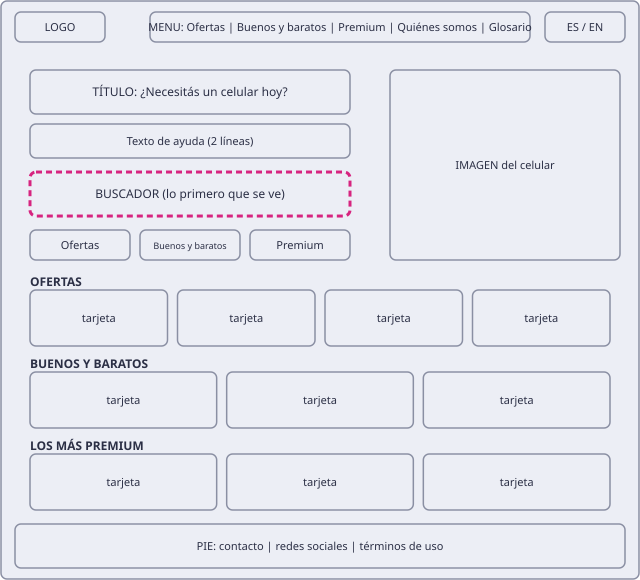
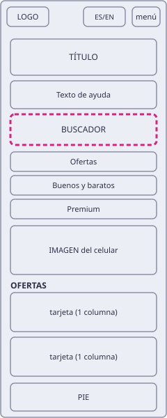
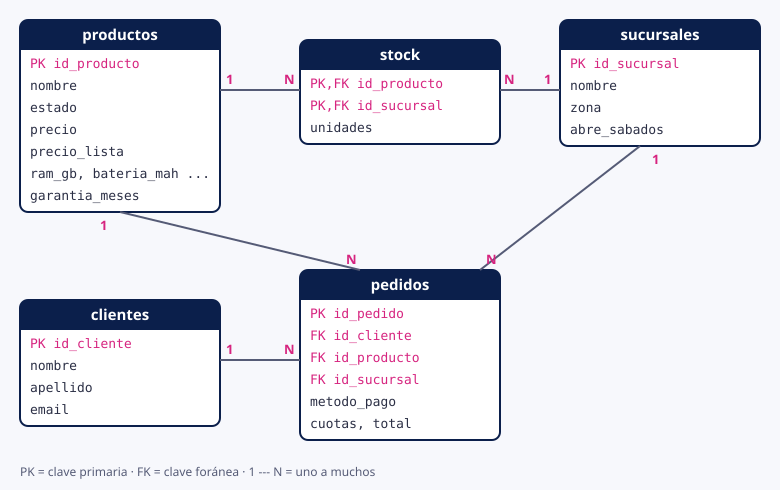

Diseño del proyecto (UX/UI)
Antes de programar se define para quién se construye y dónde va cada cosa.
1. Tema elegido
Una tienda de celulares para personas que necesitan reemplazar su teléfono con urgencia. Muestra tres grupos: celulares en oferta, buenos y baratos, y premium.
2. User Persona
Mirta, 62 años
Se le rompió el celular y necesita uno hoy para llamar a su familia, hacer trámites y usar WhatsApp. No es experta en tecnología.
- Necesita: letra grande, pocas opciones bien explicadas, precios claros y poder retirar el equipo el mismo día.
- Le molesta: los sitios con demasiadas opciones, las palabras técnicas, los botones chicos y la presión para comprar.
- Quiere: encontrar un celular confiable en pocos minutos, sin gastar de más.
3. Cómo responde el sitio a la persona
- Letra grande y alto contraste, para leer sin esfuerzo.
- Tres grupos claros (ofertas, buenos y baratos, premium) en vez de una lista larga.
- Buscador visible arriba, para encontrar un modelo sin recorrer toda la página.
- Glosario que explica las palabras técnicas con ejemplos simples.
- Retiro en sucursal con stock a la vista, para resolver el mismo día.
- Sección "Para Mirta" al principio: dice para quién es la página, que lo que busca está en Ofertas y cómo la ayuda cada parte.
- Celular recomendado con un cartel azul. Lo elige una consulta SQL: nuevo y con descuento y batería grande y con stock hoy.
- Guía fácil de 5 pasos con números grandes y palabras simples, más un teléfono para pedir ayuda.
- Botón "Letra grande" que agranda todo el texto y se acuerda de la elección.
- Botones de 48 píxeles de alto como mínimo, fáciles de tocar con el dedo.
4. Wireframe (el "esqueleto" de la página)
Solo cajas grises, sin colores ni fotos. El recuadro punteado marca el buscador: está debajo del título, en la parte de arriba, para que Mirta lo encuentre enseguida sin tener que bajar la pantalla.


Navegación lógica: el menú lleva a las tres secciones del catálogo, a "Quiénes somos" y al glosario, y el pie reúne el contacto, las redes y los términos.
5. Modelo entidad-relación (base de datos)
La base de datos tiene cinco tablas relacionadas. Cada flecha une una clave primaria (PK) con una clave foránea (FK):

- productos 1 --- N stock N --- 1 sucursales: un celular puede estar en varias sucursales y una sucursal tiene varios celulares. Esa relación de muchos a muchos se resuelve con la tabla intermedia
stock, que guarda las unidades. - clientes 1 --- N pedidos: un cliente puede hacer varios pedidos.
- productos 1 --- N pedidos y sucursales 1 --- N pedidos: cada pedido es de un celular y, si se paga en efectivo, tiene una sucursal de retiro.
- Por privacidad, la tabla
clientesno guarda el DNI ni los datos de la tarjeta.
6. Lógica booleana en las consultas SQL
La lógica booleana trabaja con dos valores, verdadero y falso. En SQL, cada condición del WHERE se evalúa para cada fila, y solo quedan las filas en las que el resultado es verdadero:
| Operador | Significa | Resultado verdadero cuando… |
|---|---|---|
AND | "y" | se cumplen las dos condiciones |
OR | "o" | se cumple al menos una |
NOT | "no" | la condición es falsa (la invierte) |
Así se arma cada sección de la página (archivo base-de-datos/consultas.sql):
- Celulares en oferta (
OR):precio < precio_lista OR estado = 'usado'. Entra si tiene descuento o si es usado. - Buenos y baratos (
NOTyAND):NOT (precio < precio_lista OR estado = 'usado') AND precio <= 550000 AND ram_gb >= 4 AND bateria_mah >= 5000. ElNOTevita que un celular de oferta se repita acá; por las leyes de De Morgan equivale a "sin descuento y nuevo". - Los más premium (
ORcon unANDadentro):precio >= 1000000 OR (camara_mp >= 100 AND carga_w >= 60). Los paréntesis deciden qué se evalúa primero. - Para una compra urgente:
unidades > 0 AND precio BETWEEN 200000 AND 560000 AND (estado = 'nuevo' OR garantia_meses >= 3). Muestra solo lo que Mirta puede retirar hoy.
Las tres primeras consultas son las que realmente deciden dónde aparece cada celular: un programa las ejecuta y exporta el resultado para la página. Además, la tabla pedidos usa una regla booleana para no aceptar datos imposibles: CHECK (metodo_pago = 'tarjeta' OR id_sucursal IS NOT NULL), es decir, si se paga en efectivo tiene que haber una sucursal de retiro.